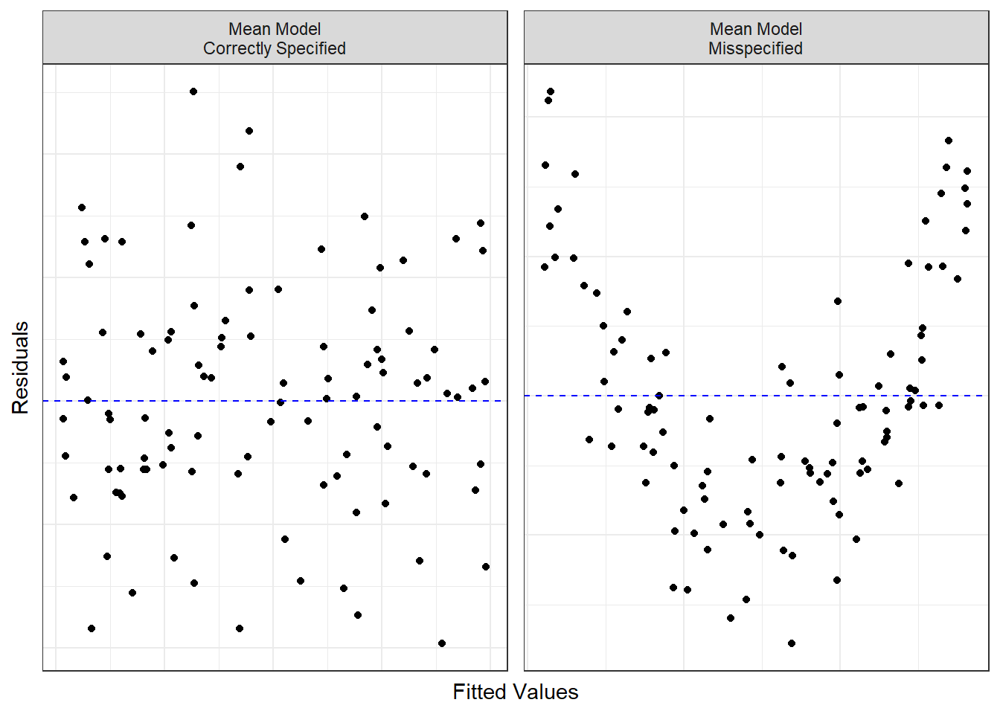
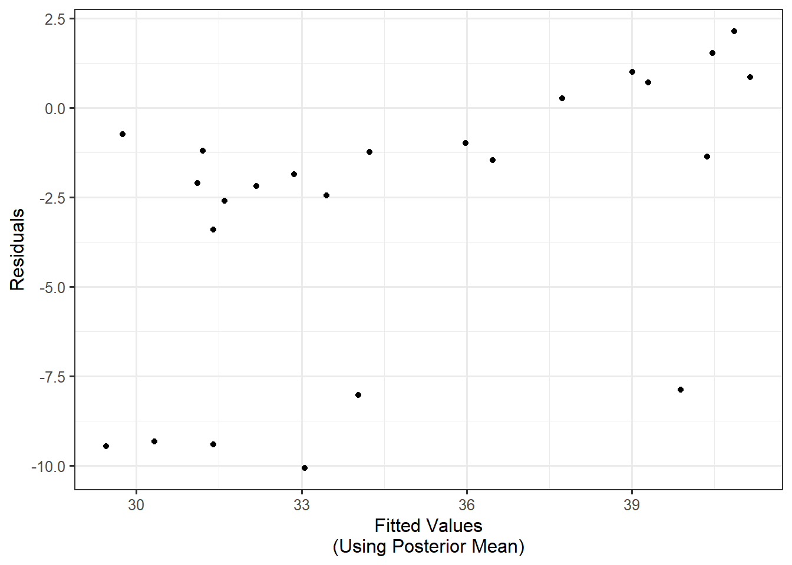
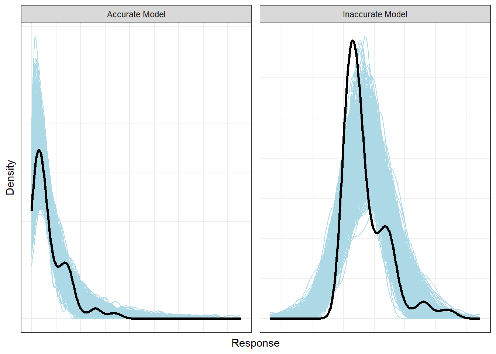
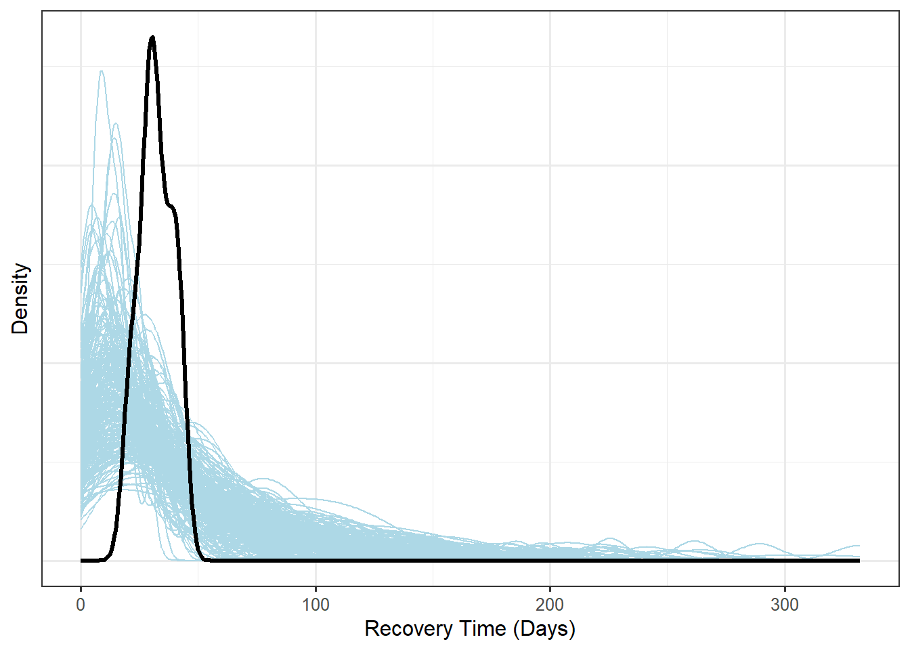

27 Assessment for Regression Models for the Mean
While we have tried to emphasize the flexibility of regression models, the most common regression model is one of the form
\[ \begin{aligned} (\text{Response})_i &\mid (\text{Predictors})_i, \boldsymbol{\beta}, \boldsymbol{\theta} \stackrel{\text{Ind}}{\sim}f\left(\mu_i,\boldsymbol{\theta}\right) \\ \mu_i &= \beta_0 + \sum_{j=1}^{p} \beta_j (\text{Predictor } j)_i, \end{aligned} \tag{27.1}\]
where \(\mu_i\) represents the (conditional) mean response and \(\boldsymbol{\theta}\) captures additional parameters that do not depend on the predictors (often scale parameters). Equation 27.1 represents a model focused on the mean response.
It is reasonable to ask if the model we have constructed is reasonable for the data we have observed. When our models are of the form described in Equation 27.1, a large assumption is that we have correctly specified the mean response. This can be assessed graphically using residuals.
Definition 27.1 (Residual) A residual is the difference between an observed response and the predicted mean response for that same individual:
\[(\text{Residual})_i = (\text{Response})_i - (\text{Fitted Value})_i,\]
where
\[(\text{Fitted Value})_i = \widehat{\beta}_0 + \sum_{j=1}^{p} \widehat{\beta}_j (\text{Predictor} j)_i.\]
Note
In a classical introductory statistics course, the least squares estimates are used when computing the residuals. However, from the Bayesian framework, we have explored various point estimates. It is common to use the posterior mean for each parameter when computing the residuals; however, nothing prohibits the use of the posterior median or another point estimate. Transparency is critical; you should be clear about the analysis you have conducted.
In order to assess that the form of the mean model is correctly specified, it is common to construct a graphic of the residuals against the fitted values. If the form of the mean model is correct, there should not be any distinguishable pattern in the location of the graphic. Trends in the location suggest the form of the mean model is incorrectly specified (see Figure 27.1).
Assessing Specification of Mean Response
If the mean response is correctly specified, we would expect the residuals to balance around 0, regardless of the estimated mean response. When examining a plot of the residuals against the fitted values, any trends in the location suggest the functional form of the mean response has been incorrectly specified.
Example 27.1 (Rehabilitation Therapy Continued) Example 23.1 described a study to investigate recovery time among patients who have undergone a corrective knee surgery. Suppose we are willing to believe that the mean recovery time is linearly related to the age of a patient. Combining the model for the likelihood suggested in Example 23.2 and the advice on default priors specified in Chapter 25, consider the following model:
\[ \begin{aligned} (\text{Recovery Time})_i &\mid (\text{Age})_i, \boldsymbol{\beta} \stackrel{\text{Ind}}{\sim}Exp\left(\theta_i\right) \\ \theta_i &= \beta_0 + \beta_1 (\text{Age})_i \\ \beta_0 &\sim Unif(0, 25) \\ \beta_1 &\sim Unif(0, 5). \end{aligned} \]
This model was fit using an MCMC algorithm with 3 chains; a burn-in of 2000 was applied to each of the chains, and a total of 5000 samples were generated for each chain (for a total of 9000 variates after the burn-in period). The posterior mean was used to estimate each of the unknown parameters. Figure 27.2 presents the plot of the residuals against the fitted values for this model. Comment on the assumption that the mean response is properly specified.

Solution. If the mean response model is correctly specified, we would expect the residuals to balance around 0 for all fitted values. Notice that the residuals are centered below for the majority of the graphic, and only balance around 0 for large fitted values. This trend in the location of the residuals suggests the mean response model was not correct specified.
In particular, this slight upward trend suggests that perhaps we were incorrect in forcing the intercept to be positive (remember, our prior distribution forced the support for the intercept to be positive). We had done this because the mean response for an exponential distribution must always be positive. However, because of extrapolation, forcing this to be the case at an age of 0 seems to be problematic. There are two approaches we could consider in addressing this:
- We could consider a different prior that allows the intercept to be negative, accepting that it is nonsensical and that the model will not predict well for small values of age.
- We could center the age variable (by subtracting the average observed age from each observation). Center the age variable does not impact the slope, but it changes the interpretation of the intercept. In particular, the intercept would represent the average recovery time for a patient of average age. This avoids the problem of extrapolation when interpreting the intercept and might address the problems we are seeing above.
The other primary assumption that we make when fitting a regression model is that the conditional distribution of the response is appropriate. In Example 27.1, for example, we are assuming that the Exponential distribution for the response (conditional on the age) is appropriate, as opposed to a Normal distribution, for example. One technique for assessing whether this distributional assumption is appropriate is to compare the posterior predictive distribution with the observed distribution. As we have seen, the posterior predictive distribution (Definition 14.2) can be challenging to derive; fortunately, it is easily simulated using a sample from the posterior distribution. With the general model of Equation 27.1 in mind, we can generate the posterior predictive distribution as follows:
- Obtain a sample of size \(M\) from the posterior distribution of each unknown parameter: \(\boldsymbol{\beta}^{(1)}, \boldsymbol{\beta}^{(2)}, \dotsc, \boldsymbol{\beta}^{(M)}\) and \(\boldsymbol{\theta}^{(1)}, \boldsymbol{\theta}^{(2)}, \dotsc, \boldsymbol{\theta}^{(M)}\).
- For each sample from the posterior, generate a new sample of \(n\) responses according to \((\text{Predicted Response})_i^{(m)} \sim f\left(\mu_i^{(m)}, \boldsymbol{\theta}^{(m)}\right)\) for \(m = 1, 2, \dotsc, M\). If we are conditioning on the predictors, they are taken to be those from the original sample.
The above two steps produces \(M\) new samples; each generated sample will produce a unique distribution of the responses across the \(n\) observations. We can summarize each of these \(M\) distributions using a density plot, overlaid on the same graphic. Then, we can overlay the density from the observed response to get a sense of how they compare. Figure 27.3 gives an example of what this plot might look like.
Note
Due to the computational intensity of this graphic, it is common to do this for a random sample of variates instead of all \(M\) variates generated by the MCMC algorithm.
Warning
It is important to remember that comparing the posterior predictive distribution to that of the observed distribution is combining multiple conditions/assumptions together: the complete form of the distribution as well as how the individual observations vary compared to how the aggregate dataset varies. While our modeling is conditioned, the density of the observed response marginalizes across the predictors. Care must be taken not to over-interpret this graphic as proving we have the correct model.

Assessing the Likelihood
If the model for the likelihood is correctly specified, then the marginal distribution of the observed response should be similar to the posterior predictive distribution given the observed data. For a regression model, this is done by generating several samples of the same size given the posterior variates; if the distributional model is appropriate, a density plot of the observed response should line up with the density plots of those samples generated from the posterior variates. Any major differences in these shapes would suggest some aspect of the model (including the distributional form) is incorrect.
Example 27.2 (Rehabilitation Therapy Continued) Example 27.1 presented a model for the study described in Example 23.1. Figure 27.4 is a plot of the posterior predicted distribution of the responses (using 250 randomly selected posterior variates) against the observed distribution of the response. Comment on the assumption that the distributional model specified is appropriate.

Solution. The observed marginal distribution of the response is very different than the predicted distributions. While this could be due in part to the misspecification of the mean response model (as noted in Example 27.1), the level of departure here suggests the distributional assumption on the likelihood is also incorrect. If we wanted to be sure, we should refit the model using a different mean response function first, and then repeat this process.